사용자 경험 개선과 구조 설계에 강점을 가진
프론트엔드 엔지니어
지선민
입니다.
약 4년간 React · TypeScript 기반 서비스를 개발하며 공통 컴포넌트 구축, 상태 관리 구조 개선, 기존 서비스의 기능 확장과 운영 오류 해결을 경험했습니다. 최근에는 Codex · ChatGPT를 활용해 코드 분석, 리팩토링, 기능 테스트 및 문서화 과정을 개선하며 개발 생산성을 높이고 있습니다.
Professional
Mobility Asset Management Platform
전기 이륜차 및 배터리 교환 관리자 시스템의 기존 화면에 KS 배터리 지원 기능을 추가하고, 검색·필터 공통화 및 운영 기능을 개선했습니다.
- 기존 스테이션 관리 화면에 KS 배터리 구분 및 관련 정보 표시 기능 추가
- 이륜차 목록의 ZS/KS 구분 필터 및 KS 차량 표시 기능 추가
- 이륜차 등록 화면에 KS 유형 선택과 관련 입력 항목 적용
- KS 관련 백엔드 API 연동 및 데이터 갱신 처리
- 기존 관리자 화면의 검색·필터 영역을 SearchBox, FilterSearchBox, SearchCalendar 등 공통 컴포넌트로 정리
- 검색·초기화 동작 및 배치를 통일하고 일부 화면의 필터 오류 개선
- i18n 적용 및 레거시 코드 리팩토링
- LogRocket 기반 운영 오류 분석 및 SQL 활용 데이터 정합성 점검
검색·필터 공통 UI 개선 Before / After
기존 화면마다 다르게 구현된 검색·필터 영역을 공통화하고 검색 조건 및 초기화 동작을 표준화했습니다. 일부 화면의 검색 영역 구현 코드를 39줄에서 17줄로 축소했습니다. 각 이미지를 클릭하면 크게 볼 수 있습니다.
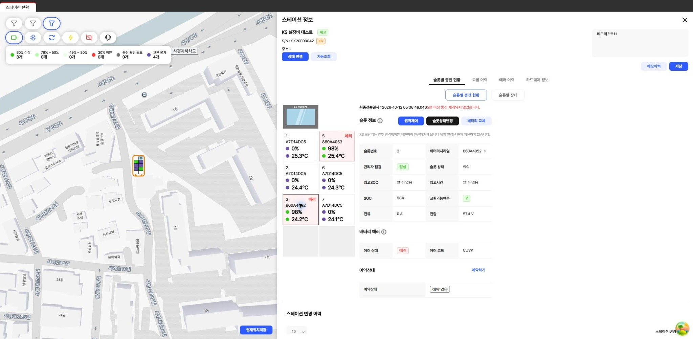
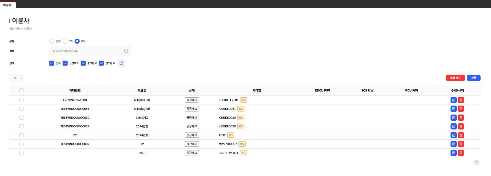
LG Digital Canvas (Gallery+)
디지털 아트 콘텐츠 등록과 편성, 다국어 콘텐츠 및 서비스 운영을 위한 React · TypeScript 기반 관리자 시스템을 개발했습니다.
- 이미지·영상 콘텐츠 등록·조회·수정 및 검색·필터 기능 개발
- 콘텐츠 유형별 동적 입력 폼 및 파일 미리보기 구현
- Shelf 콘텐츠 선택 모달 및 독립적인 페이지네이션 구현
- 다국어 콘텐츠 Excel 업로드·다운로드 기능 개발
- 공통 Table의 URL 쿼리 파라미터 충돌 해결 및 기존 사용 방식과의 호환성 유지
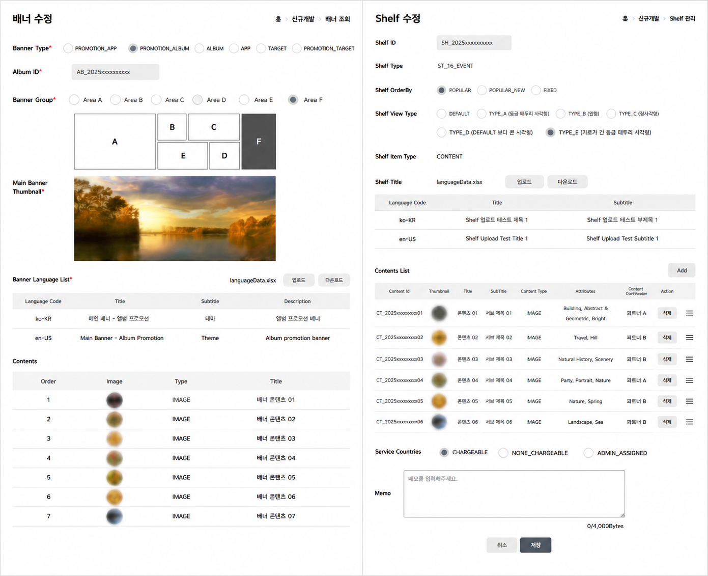
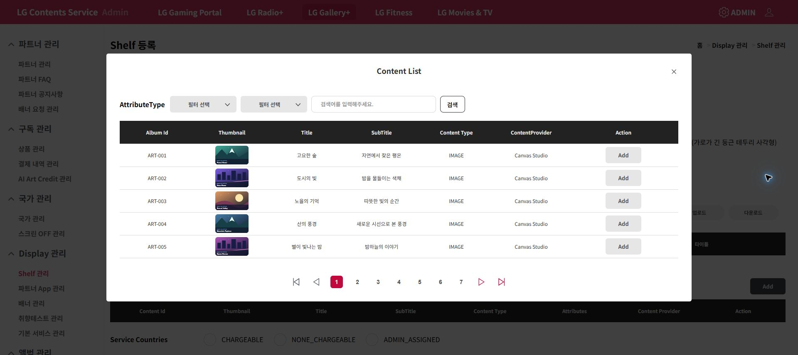
문제 해결 · 부모 화면과 모달의 공통 Table이 동일한 URL 쿼리 파라미터(page, size)를 사용해 발생한 충돌을, 파라미터 키를 선택적으로 분리할 수 있도록 개선해 해결했습니다. 기존 사용 방식과의 호환성도 유지했습니다.
LG GamePortal
게임 콘텐츠 추천 및 편성을 위한 관리자 시스템에서 배너·Shelf 관리와 운영 기능을 개발했습니다.
- 배너·Shelf 콘텐츠 등록·조회·수정·삭제 기능 개발
- React Hook Form 기반 유형별 동적 입력 폼 및 조건부 유효성 검증
- 드래그 앤 드롭 기반 콘텐츠 노출 순서 변경
- 특정 위치 고정 조건을 고려한 콘텐츠 편성 기능 구현
- 다국어 콘텐츠 Excel 업로드·다운로드 API 연동
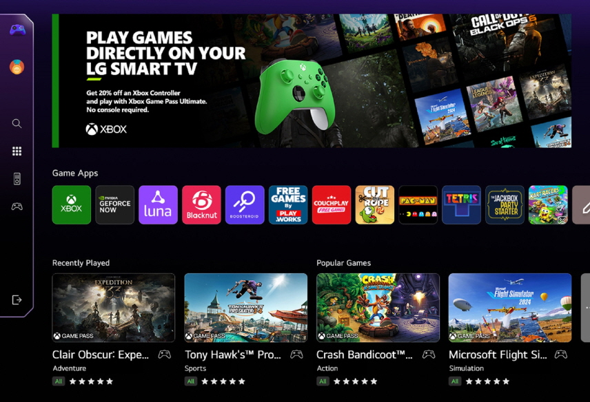
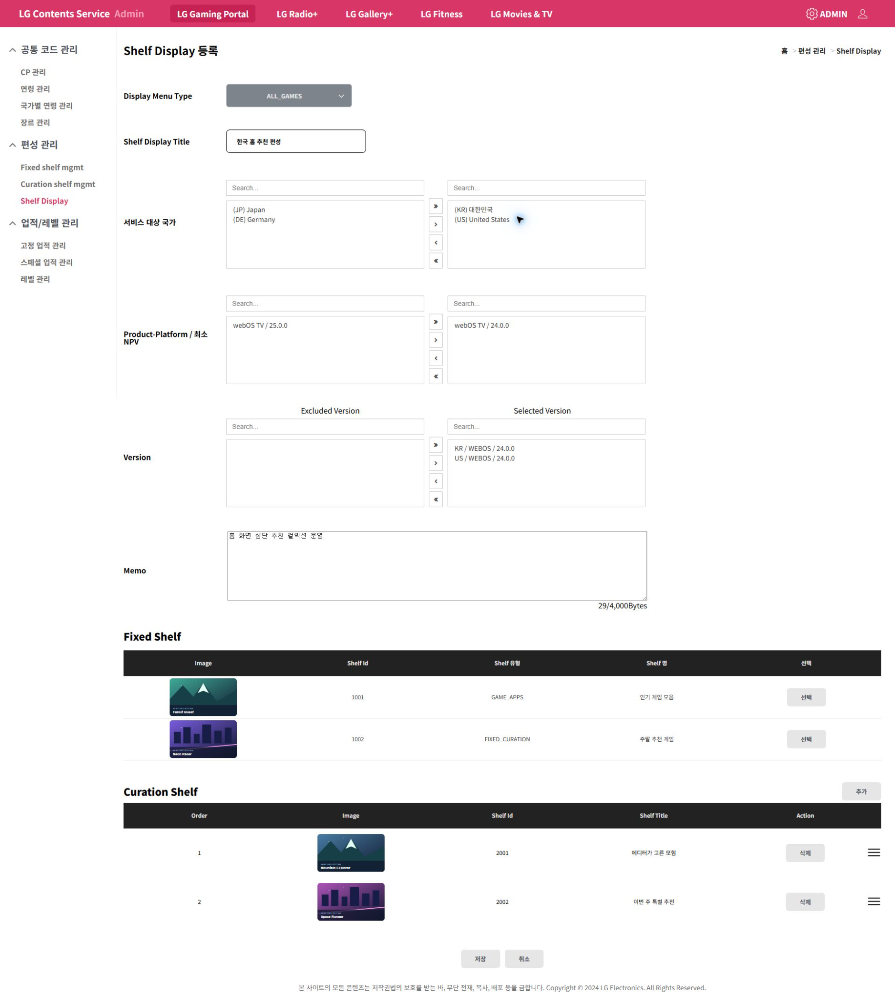
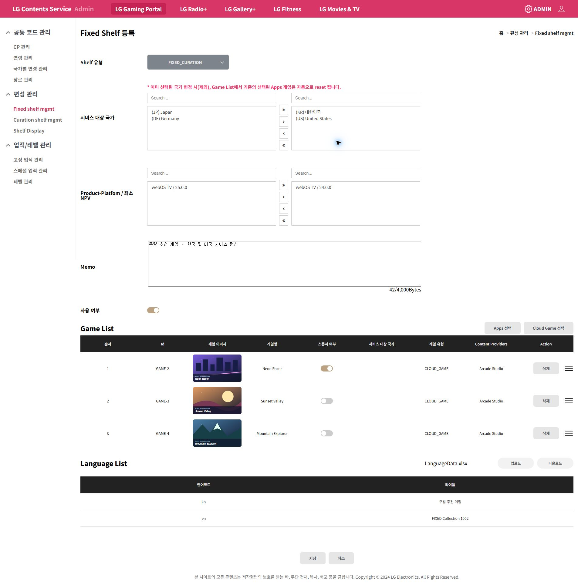
이미지를 클릭하면 원본 크기로 볼 수 있습니다.
FITT 서비스 소개 홈페이지
FITT의 스케줄, 운동검사, 회원 관리, 운영 데이터 서비스를 소개하는 홈페이지의 프론트엔드를 단독 개발했습니다. 기존 운영 관리 시스템과 구분되는 소개용 웹페이지입니다.
- 서비스 소개, 회사 소개 및 기업용 서비스 안내 페이지 UI 개발
- 다양한 화면 크기를 고려한 반응형 레이아웃 구현
- 서비스 기능 소개 콘텐츠 및 실제 화면 예시 구성
- 기존 서비스 로그인 페이지로 이동하는 연결 기능 적용
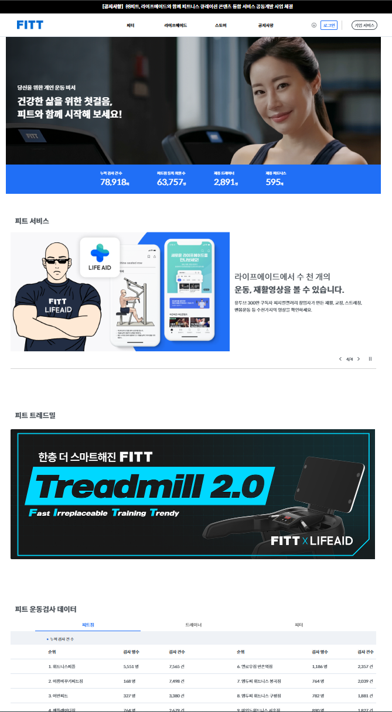
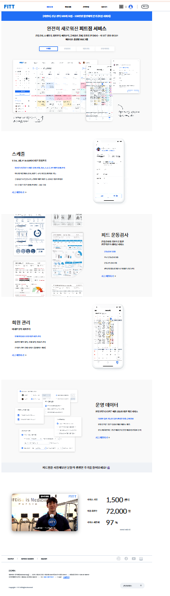
FITT 피트니스 센터 운영 관리 시스템
이미 운영 중이던 Angular 기반 관리 시스템의 스케줄·예약·회원·직원 관리 화면을 유지보수하고, 운영 과정에서 발생한 버그를 수정했습니다. 해당 화면 전체를 신규 개발한 것은 아닙니다.
- 노쇼 처리 등 예약 상태 변경 이후 후속 예약 흐름에서 발생하는 오류 수정
- 예약·스케줄 화면의 상태 표시 및 모달 동작 오류 개선
- 회원 검색, 통계 표시 등 회원 관리 화면의 기능 오류 수정
- 직원 퇴사 처리 후 목록 갱신 및 상세 화면 이동 동작 개선
- 기존 웹 서비스의 UI·입력값 검증·다국어 관련 운영 이슈 대응
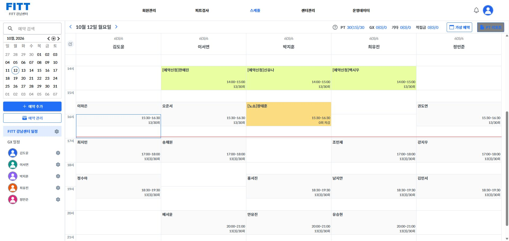
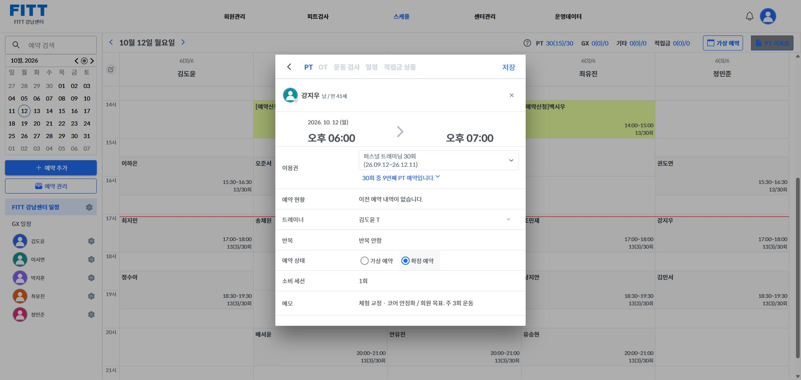
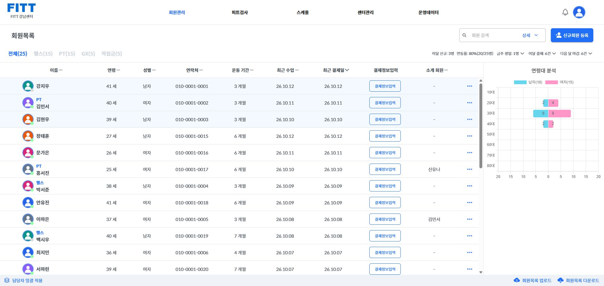
Projects
-

Squirrel Board — Kanban Project Manager
Next.js · TypeScript · Prisma/Supabase · React Query · Zustand
- 프로젝트 및 작업 관리와 칸반 보드 UI 구현
- 서버·클라이언트 상태 관리 및 반응형 화면 구성
-

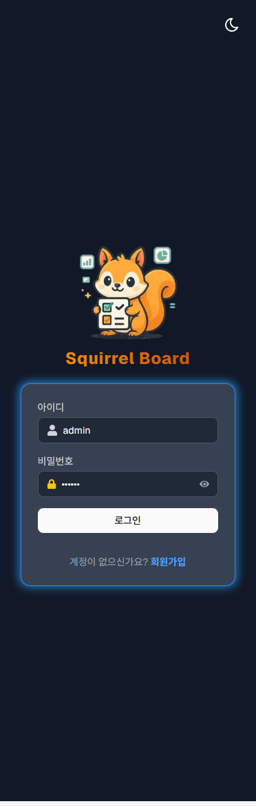
-
Robo Shop — Next.js E-commerce
Next.js App Router · TypeScript · Prisma · React Query · NextAuth
- 일반 로그인 및 카카오·네이버 OAuth 인증
- 비회원 장바구니·위시리스트 유지 및 로그인 시 데이터 병합
- 주문·모의 결제 처리 및 다국어·반응형 UI 구현
-

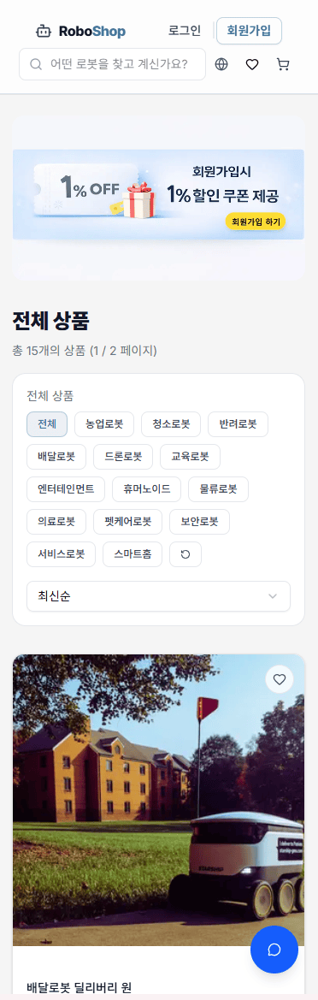
Experience
- Atomic Design 기반 공통 컴포넌트 시스템 구축 및 프로젝트 간 재사용 구조 정립
- React Query · Zustand 기반 상태 관리 개선 및 데이터 흐름 최적화
- 공통 Table의 URL 쿼리 파라미터 충돌 해결
- LogRocket 도입으로 사용자 세션 기반 오류 추적 및 운영 안정성 개선
- 검색 및 필터 UX 공통 컴포넌트 구축으로 사용자 경험 일관성 확보
- i18n 전면 적용 및 레거시 리팩토링을 통한 글로벌 서비스 대응 기반 구축
- KS 배터리 표준화 관련 관리자 UI 개발 및 API 연동
- Codex · ChatGPT 활용 코드 분석, 리팩토링, 문서 작성 및 개발 자동화
- PR 코드 리뷰 도입 제안 및 협업 프로세스 개선
About
약 4년간 프론트엔드 엔지니어로 근무하며 사용자 경험 개선, 구조 설계, 상태 관리 최적화, 운영 안정성 향상을 경험했습니다.
공통 컴포넌트 시스템 구축과 데이터 흐름 설계를 통해 유지보수성과 확장성을 개선해왔으며, React Query · Zustand 기반 상태 관리 구조 개선을 경험했습니다.
최근에는 Codex · ChatGPT를 적극 활용하여 코드 분석, 리팩토링, 문서화 및 기능 설계 과정을 개선하고 있으며, AI를 단순한 코드 생성 도구가 아닌 문제 해결을 위한 협업 도구로 활용하고 있습니다.
사용자 경험과 개발 효율을 함께 고려하며 지속 가능한 서비스를 만드는 개발자를 지향합니다.
Tech
Frontend
State & Data
Architecture
Monitoring
AI Assisted Development
Backend
Writing & Activities
- Velog에 170개 이상의 기술 글 작성 (React, JS 동작 원리, 상태 관리, 성능 최적화 등)
- 개발 서적 학습 및 개념 정리 기록
- 팀 내 Git 사용 세미나 진행